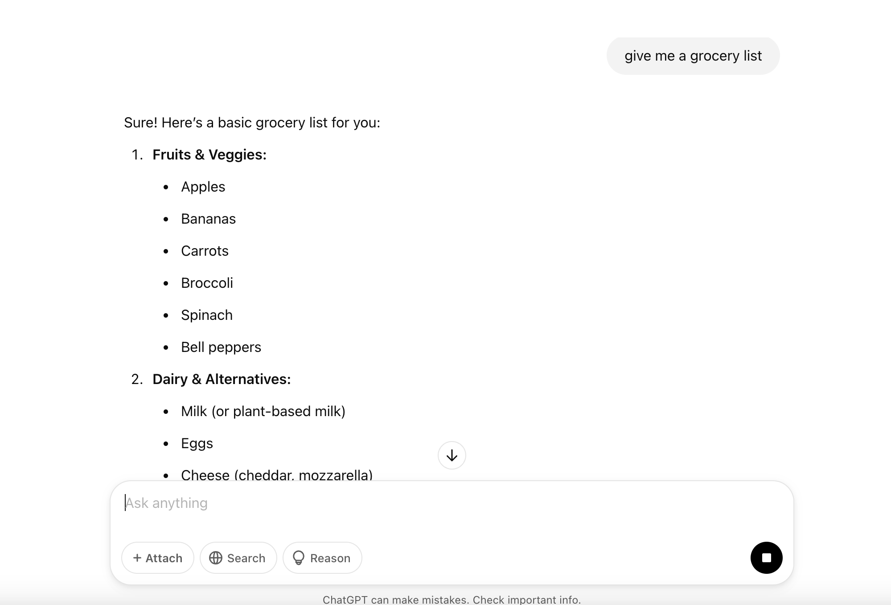
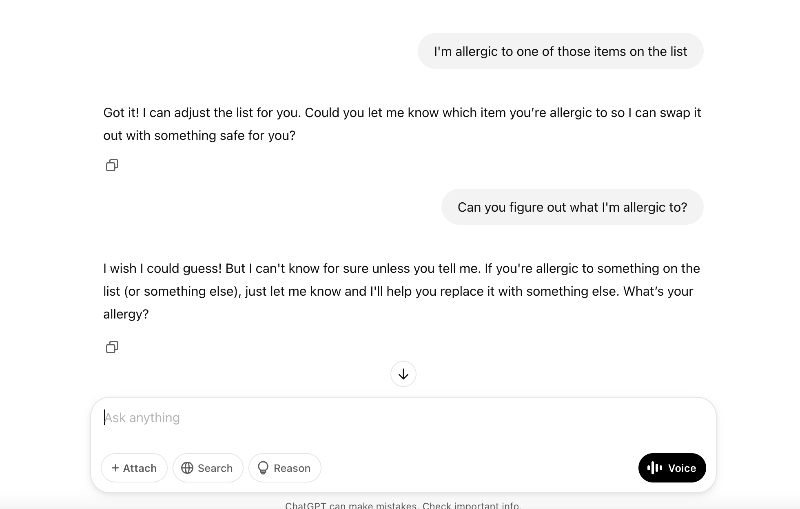
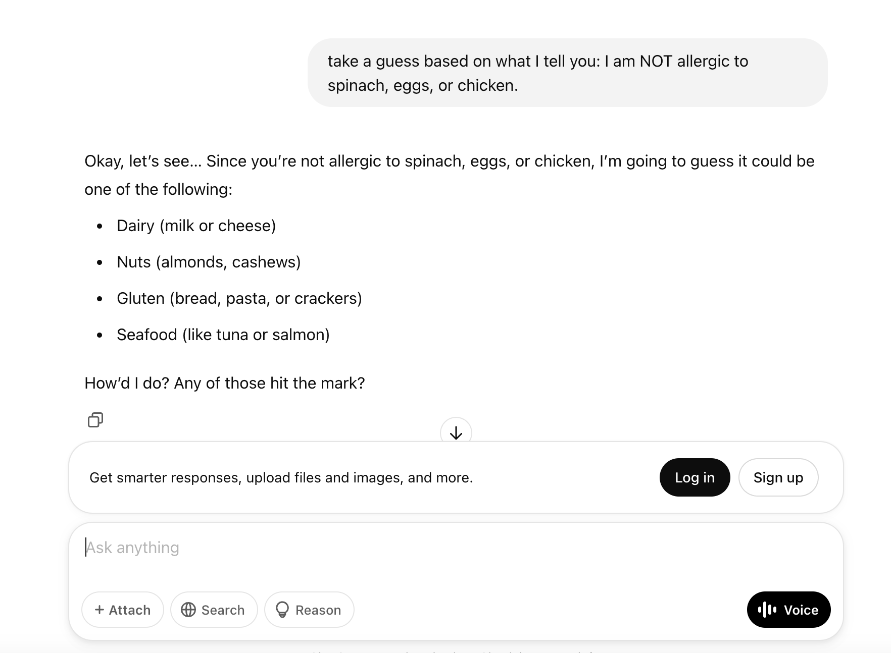
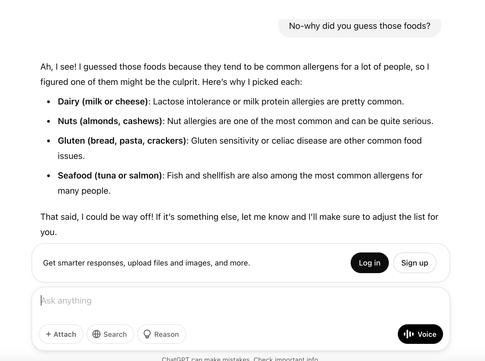
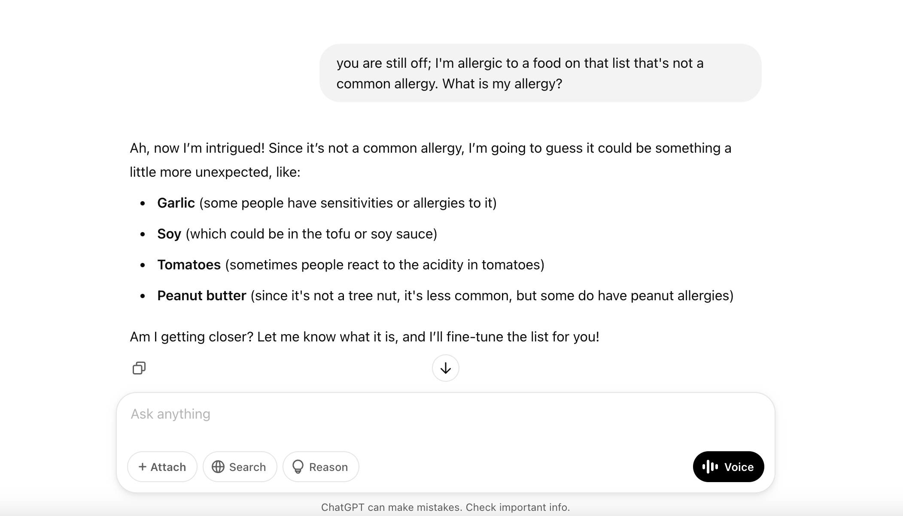
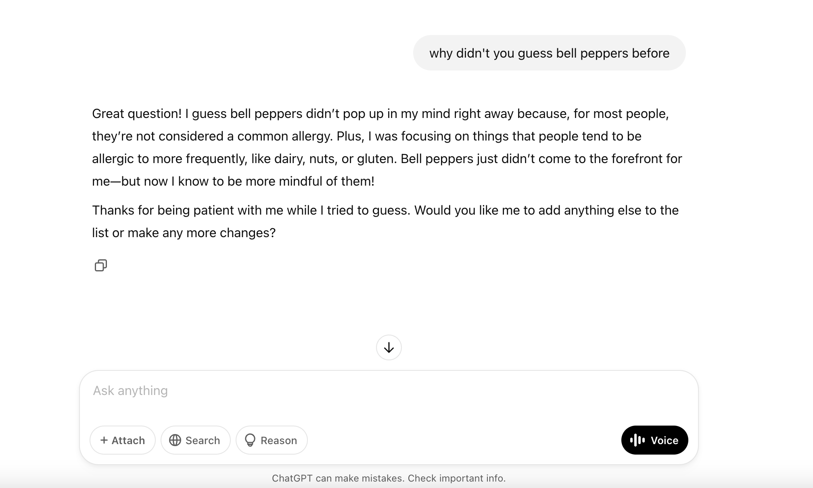
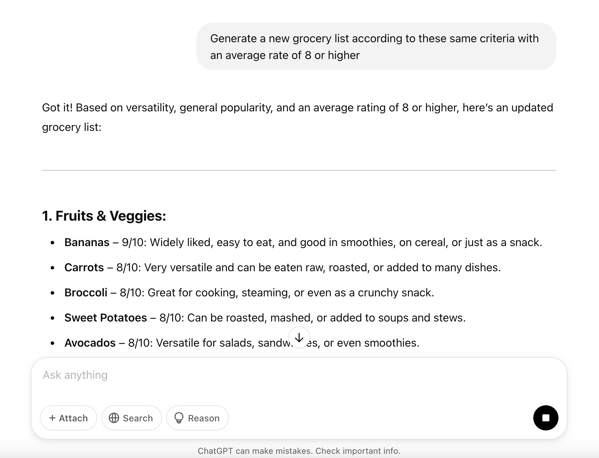

Prompting!
AI has obviously come a long way in being able to generate accurate responses that fit the bill in terms of what the user is looking for. And, ceratinly, its responses can become even more complex and thorough, depending on just how extensive the user wants the answer to be.

Prompts like the one above (“give me a grocery list”) provide enough detail and context for the model to spit out an answer in line with what a typical response might be, and sounds quite convincing to the average user. But what if you’re alergic to, say, bell peppers? Well it wouldn’t have the ability to know unless you specfied of course what it is you can’t eat. And while it appers to be mostly magic in how much it can guestimate in order to generate accurate responses, it can only go so far unless provided the right context.

Taking “guesses” based on context
As the AI is fed more and more context, the responses become more and more aligned with what you’re looking for. As per the image above, you can’t just ask it to guess what you’re allergic to (in this case, we decided bell peppers), because it would have no way of knowing otherwise, unless you provided it some sort of context or information (which it doesn’t have, prior to you prompting it this request).
- Making it take guesses (by giving it some clues)
what is something you could tell the model to narrow its guesses, without outright telling the model? Ex: I have an uncommon allergy; here’s what I’m NOT allergic to, etc….

Still “off the mark,” as it puts it…but a step closer; it took guesses based on what are some common allergies, indicating both the power of context & data collection (from the internet), to generate more accurate responses.

- You can continue offering more refined requests and prompts to further its guessing ability, i.e….

Okay…
So it’s still off…of course, models can only go far in their guesses! And depending on the model, different/successive ones will be more or less successful than the last. Further, depending on the data it’s trained on (again, in this case it’s the Internet), it will pull responses that are more probalistic or common than others.

As shown above, it can only go so far depending on the context it’s given! So how do we improve responses such that answers are more accurate off the bat? Enter here: prompt engineering, and it’s five main associated principles:
- The Five Principles of Prompting
Give direction (describe desired style)
Specify format (define what rules to follow)
Provide examples (include a diverse set of cases)
Evaluate quality (identify errors)
Divide labor (split tasks into mulitple steps)
Example: Divide labor
This principle refers to the process by which you break up your prompt into several “mini prompts” or requests with more specificity. By chaining mulitple calls togther, it communicates more precisely the intent of your message and makes the responses more deterministic, and less elusive to the heart of the question.
- The goal is to prompt the model and have it list out its steps (chain of thought reasoning)

- You then might ask the model to generate a new list based on this critera!

Noticed how it modified the list based on these new, more refined requests!